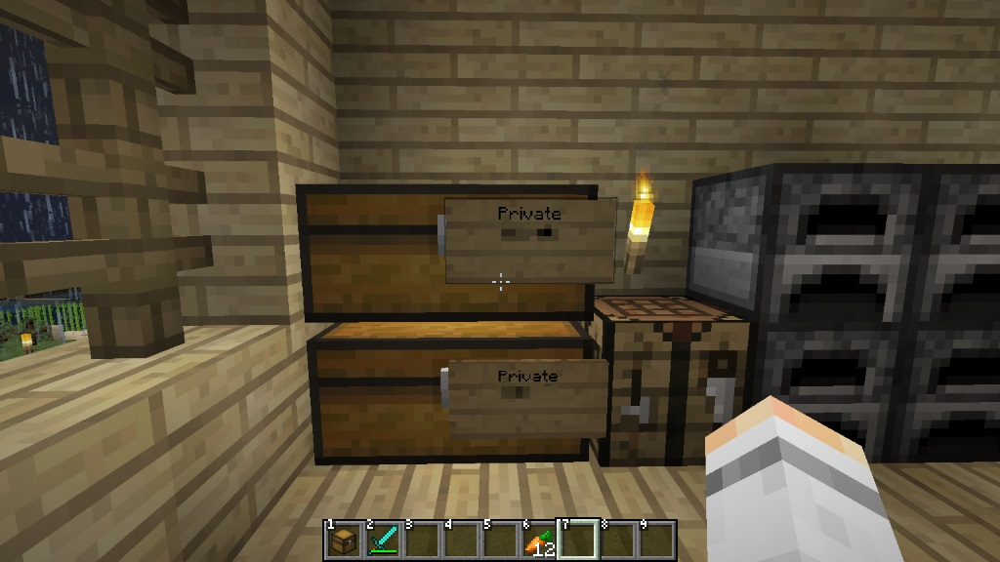

CraftBukkit-1.8 memo
Bukkit/CraftBukkit/Spigot
Mojang配下の公式ではなく、Spigotチームが1.8対応を行ったBukkit/CraftBukkit。今のところ生成物は配布されていないので自力でビルドする必要がある。Java-SDK + gitの環境を整えてあれば java -jar BuildTools.jar で出来上がる。
公式のBukkitコミュニティで開発されたものでないため、今後どうなるかの見通しは不明。ただし公式のBukkitはそれ以上に不明。
看板データの変換問題
CraftBukkit 1.8より一部の内部データがJSON形式で保存されるようになっているが、1.8以前のワールドにおいて作成した看板の文字列にJSONのSyntaxが含まれていた場合、その文字が消えてしまう。
この時問題になるのが、LocketteプラグインでロックをしているワールドをCraftBukkit 1.8でロードすると、
全てのロックチェストの看板の[ ]が消滅し、ロックが外れる
という現象が発生する。

セキュリティ強制全解除というあまりにもあんまりな現象のため回避策を探したところ、以下のようにサーバjar起動時のオプションに -DconvertLegacySign=true を追加することで、読み込んだワールドの看板データを変換処理してくれる機能が存在しているのを発見。
$ java -Xmx1024M -Xms1024M -DconvertLegacySigns=true -jar craftbukkit.jar
変換と同時に看板の内部データに変換済みのフラグを埋め込むため、2重3重に変換がかかる心配はないが、1.8でこのフラグ無しですでに読み込んでしまったワールドは変換処理をせずJSON型で保存済みのため、その後 convertLegacySigns を有効にすると2重変換がかかり、下記のように看板の内容が破損する。

すでに1.8で起動してしまったワールドを今後も使いたい場合、後からconvertLegacySignsを設定するのはおすすめできない。泣きながらワールド中の看板を貼り直すことになる可能性が高い。
そんな状況に陥らないためにもバックアップを忘れずに。
※このフラグの情報が現状出てないのは、このようにワールドを壊す危険性が高いからだと推測される。また公にしていない以上、今後仕様を変えてくる可能性も考えられる。
各プラグインの対応状況
WorldEdit, WorldGuard, PermissionsEx, Essentials
Guavaのバージョンアップに伴って問題の出る主要プラグインをSpigotチームが独自に配布している。
Multiverse
開発関係者が1.8でも問題ないと発言
Dynmap
dev版が出ている
Lockette
前述の看板データ変換問題がある 現行のもので動作は問題ない
BlockHat
現状エラーが出て動かない。 メンテも長らくされてないので今後が怪しい。
PlayerHeads
現状動かないけどそこそこ頻繁にメンテされているのでそのうち対応されると思われる
HawkEye
エラーは出てないけどブロック増えてる分の挙動は不明